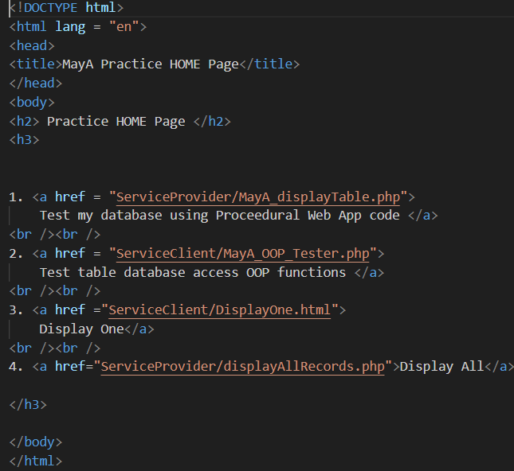
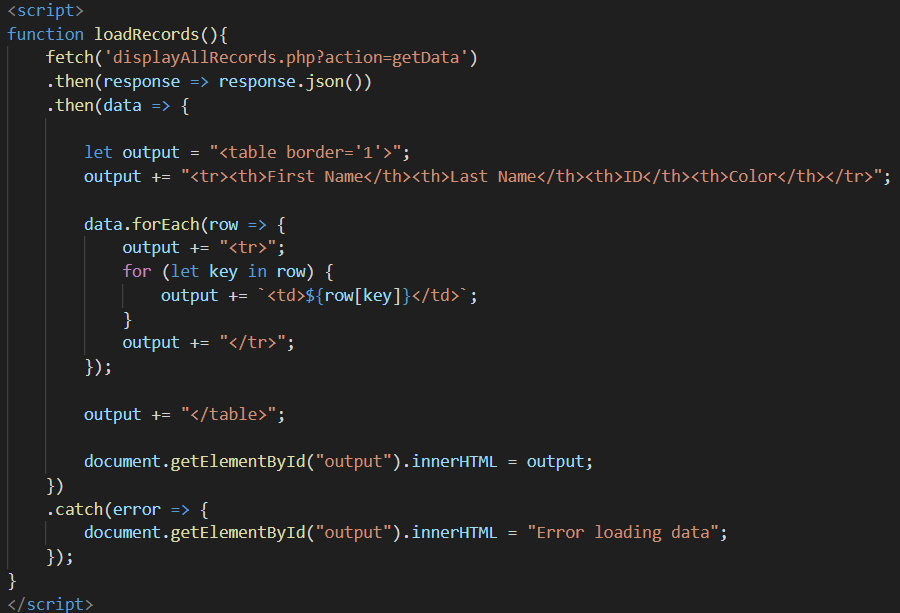
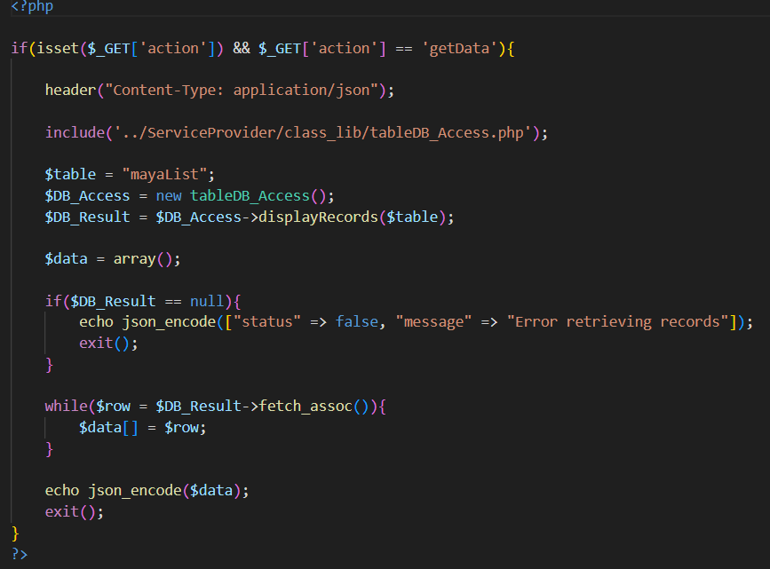
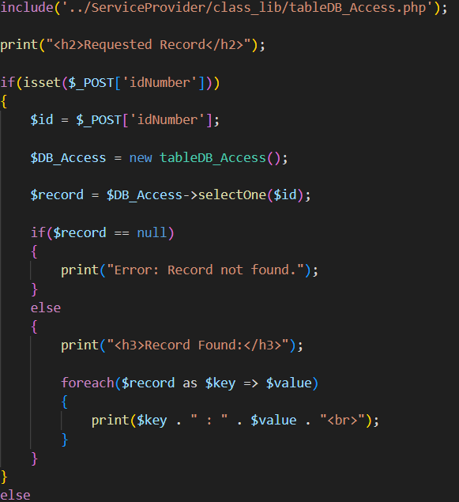
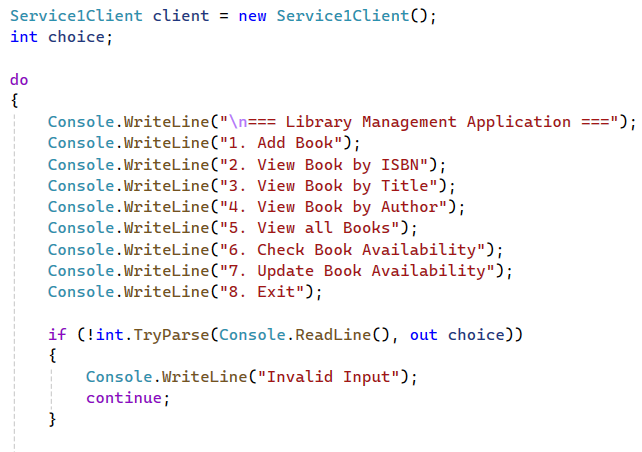
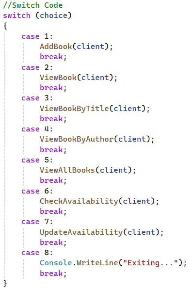
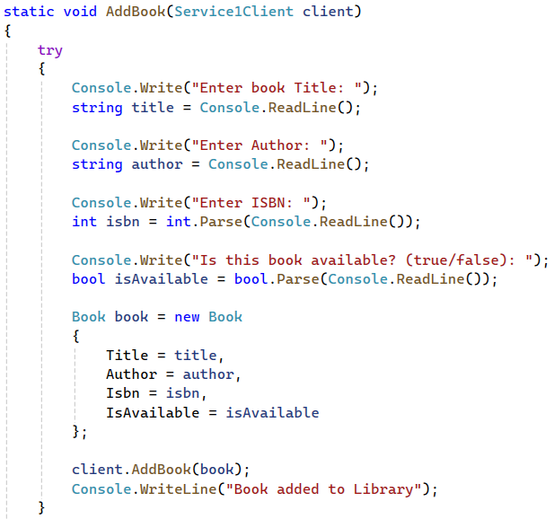

Examples available on my public Github
CIS 266 Examples
Unit2_Ex3 (RESTful AJAX-JSON-PHP-MySQL DB Web Service)
Converted a multi-page website into an AJAJ/PHP web service with MySQL integration, implementing modular architecture, dynamic data retrieval, and client-side testing tools to simulate real-world API functionality.Screenshots of Working App
Screenshots of Code




Dynamic SCRUM 3 Team Project(RESTful AJAX-JSON-PHP-MySQL DB Web Service)
Worked with a team to Build a full working web application with a database, API, and frontend that all communicate using JSON, and package it like a real software systemPowerpoint slides from Presentation
Static Unit3_Ex2 (Java ProductDB class SOAP Web Service with unique product)
Built a WCF-based library system that manages books and borrowing operations, and connect it to a console app that lets users interact with it through a menu.Screenshots of Working Project
Screenshots of Code




Static Scrum 4 Team Project (Presentation slides and Demo videos)
Worked with a team to Build a real-time voting web app using Socket.IO where users can vote and instantly see live results updated across all connected clients.Powerpoint from Presentation
Video Presentation